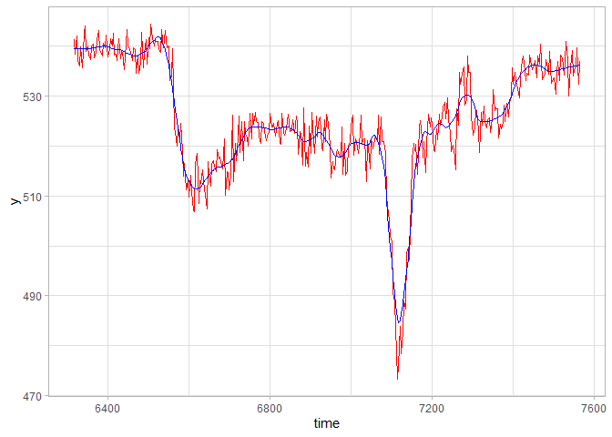
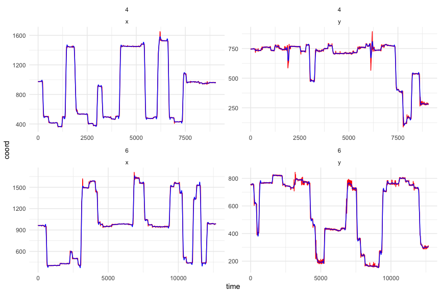
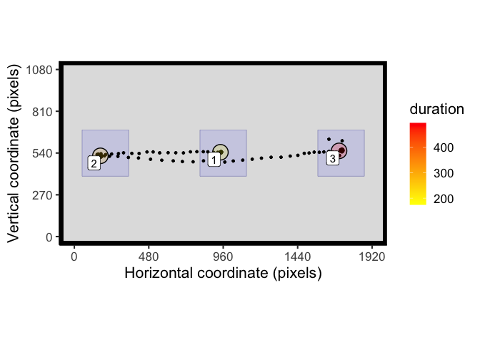
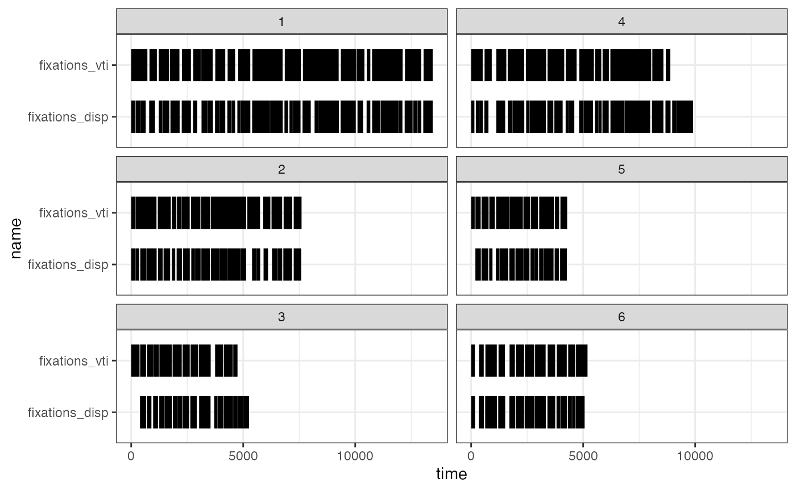

A set of tools for eye data processing, analysis and visualisation in R
eyetools is a package that provides a set of simple tools that will facilitate common steps in the processing and analysis of eye data. It is intended for use with data from psychological experiments. The idea is to have a workflow which is aided by these functions, going from processing of the raw data, to extraction of event related data (i.e., fixations, saccades), to summarising those data at the trial level (e.g., time on areas of interest).
Warning - still in somewhat experimental form! Please check results carefully
to install: devtools::install_github("tombeesley/eyetools")
It is free to use under the GNU General Public Licence.
Available functions:
| Implemented functions | Description |
|---|---|
AOI_seq() |
Detect the sequence in which AOIs were entered in a trial |
AOI_time() |
Time on AOIs; works with rectangular and circular AOIs; works with raw and fixation data |
combine_eyes() |
Combines binocular data (i.e., average or “best eye”) |
compare_algorithms() |
Provides a comparison between the dispersion and VTI fixation algorithms with correlations and plot |
conditional_transform |
Implements a single-axis flip for specific trials to normalise data with counterbalanced designs |
fixation_dispersion() |
Dispersion algorithm for fixation detection |
fixation_VTI() |
An inverse saccade algorithm for fixation detection |
hdf5_to_csv() |
converts eyetracking data retrieved from TOBII eyetrackers to csv |
interpolate() |
Interpolates data across gaps; provides a summary report of repair |
plot_seq() |
provides a 2D plot of raw data in one trial. Data can be split into time bins |
plot_spatial() |
provides a 2D plot of raw data, fixations, saccades, and AOIs |
saccade_VTI() |
Velocity threshold algorithm for saccade detection. Provides summary of velocity, start/end, duration |
smoother() |
smooths data for use in saccade algorithms |
How to use eyetools (work in progress)
Installation
You can install eyetools using the following code:
if (!require(devtools)) {
install.packages("devtools")
library(devtools)
}
install_github("tombeesley/eyetools")and then load it:
The format of raw data
Data needs to be in a particular format to be compatible with the functions in eyetools. This format is 4 columns of data, with each row representing a sample. The four columns are: time, x, y, and trial. You can see an example with the built in data sets:
example_raw_sac## # A tibble: 32,608 × 4
## time x y trial
## <dbl> <dbl> <dbl> <dbl>
## 1 0 940. 535. 1
## 2 3 940. 536. 1
## 3 7 936. 533. 1
## 4 10 939. 536. 1
## 5 13 944. 533. 1
## 6 17 939. 535. 1
## 7 20 938. 531. 1
## 8 23 939. 536. 1
## 9 27 940. 534. 1
## 10 30 942. 537. 1
## # ℹ 32,598 more rowsImportantly, the data for each trial should be sequential and logical, that is, the timestamps should run continuously, without any gaps in the recording process. The eyetools package expects data to contain only data for a single participant; none of the functions handle the data for multiple participants in their present state.
Repairing data
Raw data will often contain missing samples, which we can attempt to repair. eyetools has an interpolate() function you can use to do this. It will produce a report of how successful the repair was in terms of the missing data before and after interpolation:
interpolate(example_raw_sac, report = TRUE)## [[1]]
## # A tibble: 32,608 × 4
## time x y trial
## <dbl> <dbl> <dbl> <dbl>
## 1 0 940. 535. 1
## 2 3 940. 536. 1
## 3 7 936. 533. 1
## 4 10 939. 536. 1
## 5 13 944. 533. 1
## 6 17 939. 535. 1
## 7 20 938. 531. 1
## 8 23 939. 536. 1
## 9 27 940. 534. 1
## 10 30 942. 537. 1
## # ℹ 32,598 more rows
##
## [[2]]
## # A tibble: 1 × 2
## missing_perc_before missing_perc_after
## <dbl> <dbl>
## 1 0.0998 0.0952
raw_data <- interpolate(example_raw_sac) # store as new objectWe can also apply a smoothing function (smoother()) over the data, which is particularly important for the analysis of saccadic velocities.
smooth_data <- smoother(example_raw_sac)
library(tidyverse)
r <- filter(raw_data, trial == 2)
s <- filter(smooth_data, trial == 2)
ggplot() +
geom_line(data = r,
aes(x = time, y = y),
colour = "red") +
geom_line(data = s,
aes(x = time, y = y),
colour = "blue")
Processing fixations
The function fixation_dispersion() is a dispersion-based algorithm for identifying fixations, based on the algorithm described in Salvucci and Goldberg (2000). Passing raw data to this will return a data frame with the fixations ordered by trial and by fixation sequence, with the averaged x and y coordinates, timestamps and duration. The “min_dur” parameter will restrict to fixations over a certain duration. The “disp_tol” parameter sets the tolerance for the dispersion of data within a fixation. Exploratory analysis of the data will be needed to find suitable values for these.
raw_data_f <- filter(raw_data, trial <= 3) # get a sample of trials
fixation_dispersion(raw_data_f, min_dur = 120, disp_tol = 100)## trial fix_n start end duration x y prop_NA min_dur disp_tol
## 1 1 1 0 230 230 937 535 0.000 120 100
## 2 1 2 273 460 187 170 500 0.000 120 100
## 3 1 3 643 1180 537 1743 534 0.000 120 100
## 4 1 4 1306 1426 120 252 503 0.243 120 100
## 5 1 5 1536 1656 120 131 530 0.243 120 100
## 6 1 6 1660 1816 156 135 533 0.000 120 100
## 7 2 1 0 230 230 938 539 0.000 120 100
## 8 2 2 273 407 134 201 515 0.000 120 100
## 9 2 3 410 767 357 143 522 0.000 120 100
## 10 2 4 940 1070 130 1696 527 0.000 120 100
## 11 2 5 1073 1247 174 1739 535 0.000 120 100
## 12 3 1 0 167 167 941 543 0.000 120 100
## 13 3 2 210 533 323 159 521 0.000 120 100
## 14 3 3 623 743 120 1673 519 0.243 120 100
## 15 3 4 747 1097 350 1732 547 0.000 120 100
## 16 3 5 1187 1307 120 211 543 0.243 120 100The function fixation_VTI() is an inverse saccade-based algorithm and offers an alternative algorithm for identifying fixations. The saccade detection is based on the “velocity threshold identification” algorithm (Salvucci and Goldberg, 2000) and then checks the dispersion of the fixations. As with fixation_dispersion(), passing raw data will return an ordered data frame by trial and fixation event.
fixation_VTI(raw_data_f, min_dur = 120, disp_tol = 100, min_dur_sac = 20)## trial fix_n start end duration x y min_dur disp_tol
## 1 1 1 0 227 227 938.5558 534.7634 120 100
## 2 1 2 263 460 197 173.3073 499.6146 120 100
## 3 1 3 653 1173 520 1744.0544 534.4384 120 100
## 4 1 4 1570 1810 240 132.9872 530.3760 120 100
## 5 2 1 0 224 224 939.2441 539.4135 120 100
## 6 2 2 283 763 480 156.2593 519.9607 120 100
## 7 2 3 953 1247 294 1722.0600 531.8271 120 100
## 8 3 1 0 190 190 935.5209 542.3868 120 100
## 9 3 2 207 530 323 158.8915 521.1675 120 100
## 10 3 3 657 1093 436 1719.7962 541.7855 120 100
## 11 3 4 1220 1353 133 215.9420 543.5276 120 100It is also possible to compare_algorithms(). This returns a plot (if desired) that shows the fixations detected (in terms of time) for each algorithm in each trial and returns by default a dataframe of the percentage of data tagged as a fixation, the number of fixations, as well as the correlation of whether timepoints are classified as a fixation. The stored object that results from compare_algorithms() is a list of three. Item 1 is the same printed dataframe seen below. The second object is a further list of the correlations made using cor.test() (of which the values are stored in object one), and the final object is the data required to reproduce the plot.
comparison <- compare_algorithms(raw_data_f, min_dur = 120, disp_tol = 100, min_dur_sac = 20)
## algorithm trial percent fix_n corr.r corr.p corr.t
## 1 vti 1 61.31261 4 0.7942199 6.036655e-127 31.39707
## 2 dispersion 1 69.94819 6 0.7942199 6.036655e-127 31.39707
## 3 vti 2 79.94652 3 0.8979390 1.178382e-134 39.35023
## 4 dispersion 2 82.08556 5 0.8979390 1.178382e-134 39.35023
## 5 vti 3 77.56563 4 0.6925860 3.919521e-61 19.60670
## 6 dispersion 3 77.32697 5 0.6925860 3.919521e-61 19.60670The code used to produce the plots within compare_algorithms() is shown below
ggplot(comparison$plot,
aes(time, name, group = event_n)) +
geom_line(linewidth=10) +
facet_wrap(~trial, dir="v") +
theme_bw()Plotting data
The function plot_spatial() is a wrapper for a series of ggplot commands to plot both raw data and fixation summaries.
#library(patchwork)
# patchwork is used here to plot adjacent figures
t_raw <- dplyr::filter(example_raw_sac, trial == 9)
# process fixations
t_fix <- fixation_dispersion(t_raw, disp_tol = 100, min_dur = 150)
raw_plot <- plot_spatial(raw_data = t_raw, plot_header = TRUE)
fixation_plot <- plot_spatial(raw_data = t_raw, fix_data = t_fix)
#raw_plot/fixation_plot # combined plot with patchworkAssessing time on areas of interest
The function AOI_time() can be used to calculate the time spent on areas of interest. Areas of interest need to be defined by the x and y centre points, and the width and height in pixels:
AOI_regions <- data.frame(matrix(nrow = 3, ncol = 4))
colnames(AOI_regions) <- c("x", "y", "width_radius", "height")
AOI_regions[1,] <- c(960, 540, 300, 300) # X, Y, W, H - square
AOI_regions[2,] <- c(200, 540, 300, 300) # X, Y, W, H - square
AOI_regions[3,] <- c(1720, 540, 300, 300) # X, Y, W, H - squareAOI_time() uses the fixation data as input to the function. In this example we are finding the time spent in 3 rectangular regions across the first 10 trials:
t_raw <- filter(example_raw_sac, between(trial,1,10))
# process fixations
t_fix <- fixation_dispersion(t_raw, disp_tol = 100, min_dur = 150)
AOI_time(t_fix, AOIs = AOI_regions)## trial AOI_1 AOI_2 AOI_3
## 1 1 230 337 537
## 2 2 230 487 304
## 3 3 167 473 477
## 4 4 283 370 349
## 5 5 246 360 363
## 6 6 200 217 0
## 7 7 150 337 797
## 8 8 180 346 853
## 9 9 174 260 496
## 10 10 197 150 826We can include the AOIs within our plot_spatial():
t_raw <- filter(example_raw_sac, trial == 9) # single trial for plotting purposes
# process fixations
t_fix <- fixation_dispersion(t_raw, disp_tol = 100, min_dur = 150)
plot_spatial(raw_data = t_raw, fix_data = t_fix, AOIs = AOI_regions)
We can also define AOIs as circles by specifying the radius in the 3rd column and setting the 4th column to NA:
AOI_regions <- data.frame(matrix(nrow = 3, ncol = 4))
colnames(AOI_regions) <- c("x", "y", "width_radius", "height")
AOI_regions[1,] <- c(960, 540, 150, NA) # X, Y, R - circle
AOI_regions[2,] <- c(200, 540, 300, 300) # X, Y, W, H - square
AOI_regions[3,] <- c(1720, 540, 300, 300) # X, Y, W, H - square
t_raw <- filter(example_raw_sac, between(trial,1,10))
# process fixations
t_fix <- fixation_dispersion(t_raw, disp_tol = 100, min_dur = 150)
plot_spatial(raw_data = t_raw, fix_data = t_fix, AOIs = AOI_regions)
Circular AOIs are also handled by AOI_time and will produce different results to comparable rectangular AOIs. Here fixation 5 falls outside of the circular AOI, but within the region of the rectangular AOI:
AOI_regions <- data.frame(matrix(nrow = 2, ncol = 4))
colnames(AOI_regions) <- c("x", "y", "width_radius", "height")
AOI_regions[1,] <- c(960, 540, 150, NA) # X, Y, R - circle in centre
AOI_regions[2,] <- c(960, 540, 300, 300) # X, Y, W, H - square in centre
t_raw <- filter(example_raw_sac, trial == 13)
# process fixations
t_fix <- fixation_dispersion(t_raw, disp_tol = 100, min_dur = 150)
plot_spatial(raw_data = t_raw, fix_data = t_fix, AOIs = AOI_regions)
AOI_time(t_fix, AOIs = AOI_regions)Processing saccades
The function saccade_VTI() provides a means of processing the data for saccades, based on a “velocity threshold identification” algorithm, as described in Salvucci and Goldberg (2000). As described above, it is wise to use the smoother() function on the data first. THe sample rate can be set if known, or can be approximated using the timestamps in the data. The threshold determines the degrees of visual angle per second needed to indicate the presence of a saccadic eye-movement.
t_raw <- filter(example_raw_sac, between(trial,1,10))
t_smooth <- smoother(t_raw)
saccade_VTI(t_smooth, sample_rate = 300)## trialNumber sac_n start end duration origin_x origin_y terminal_x
## 1 1 1 223 287 64 870.3588 527.6547 177.1630
## 2 1 2 447 530 83 209.4739 500.0963 1423.6778
## 3 2 1 230 280 50 843.5225 537.3153 258.2328
## 4 2 2 757 840 83 184.2432 518.7122 1513.4706
## 5 3 1 163 217 54 864.0695 538.9868 188.6405
## 6 3 2 527 550 23 236.2502 533.8763 456.4131
## 7 3 3 1087 1120 33 1671.8701 542.0387 1278.9085
## 8 4 1 280 340 60 941.2610 525.2997 167.3127
## 9 4 2 696 730 34 193.3663 514.7454 638.2664
## 10 5 1 240 293 53 989.2586 539.9973 1655.2936
## 11 5 2 646 690 44 1688.9012 545.7763 1023.0553
## 12 6 1 197 247 50 828.6306 532.1597 194.2109
## 13 6 2 590 627 37 189.2387 524.2148 865.8235
## 14 7 1 174 224 50 746.4592 532.5643 238.6413
## 15 8 1 174 237 63 869.1958 545.3931 205.9854
## 16 8 2 564 664 100 162.7739 512.4705 1644.4917
## 17 9 1 170 227 57 880.2617 546.0806 205.5746
## 18 9 2 474 564 90 216.2176 517.2547 1621.2220
## 19 10 1 194 254 60 845.9267 539.5713 226.3948
## 20 10 2 530 624 94 180.4137 519.7535 1595.2826
## terminal_y mean_velocity peak_velocity
## 1 494.6964 272.5147 467.6514
## 2 481.3370 362.4432 625.5313
## 3 513.4092 288.7795 438.2568
## 4 514.5291 395.9804 681.8466
## 5 517.6894 311.9050 487.7608
## 6 571.9000 237.5178 343.4771
## 7 558.7318 289.8878 429.8076
## 8 517.7416 321.6201 504.1717
## 9 545.7368 322.5088 550.1424
## 10 541.0273 310.0758 476.9325
## 11 527.7667 373.8080 574.9975
## 12 524.7652 314.3620 462.7681
## 13 511.5511 446.6401 654.1694
## 14 526.0246 251.9393 359.9658
## 15 520.0820 263.1169 421.9078
## 16 553.6281 370.0669 675.9970
## 17 532.1546 294.4052 473.1296
## 18 545.1010 390.8524 664.2136
## 19 524.6715 258.9834 400.2764
## 20 557.3451 377.0585 673.8068Saccadic eye movements can be plotted alongside other data using the plot_spatial() function:
t_smooth <- filter(t_smooth, trial == 8)
t_fix <- fixation_dispersion(t_smooth, disp_tol = 100, min_dur = 150)
t_sac <- saccade_VTI(t_smooth, sample_rate = 300, threshold = 100)
plot_spatial(raw_data = t_smooth, fix_data = t_fix, sac_data = t_sac)